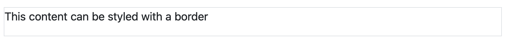
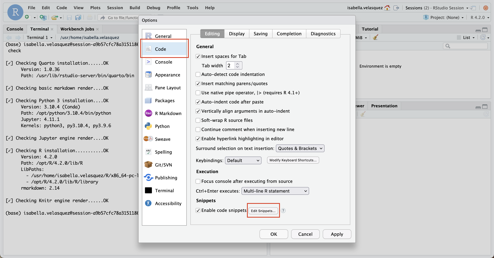
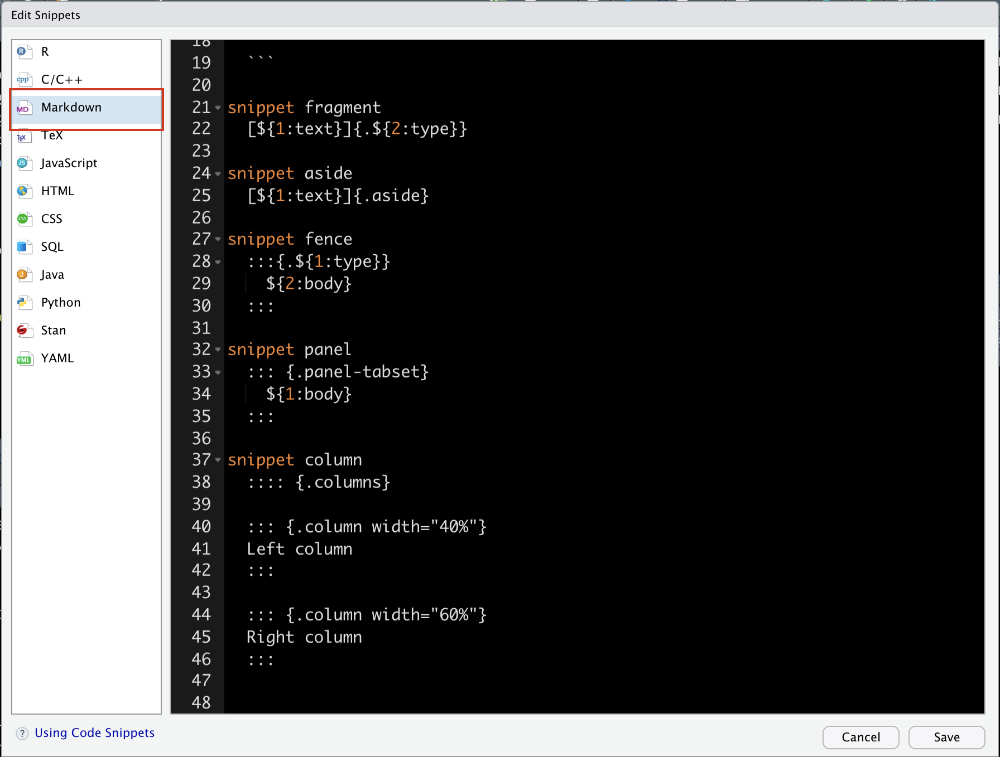
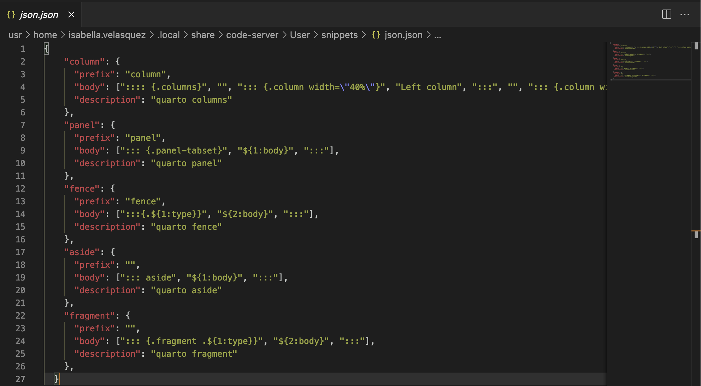
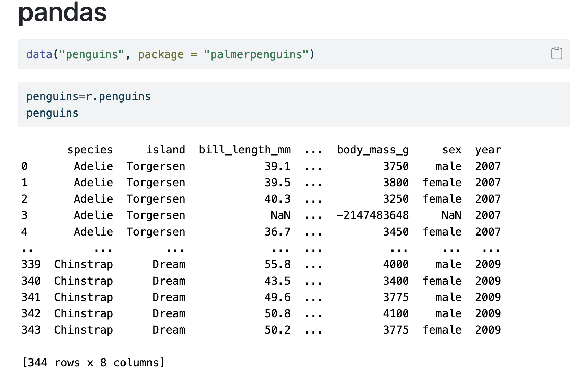
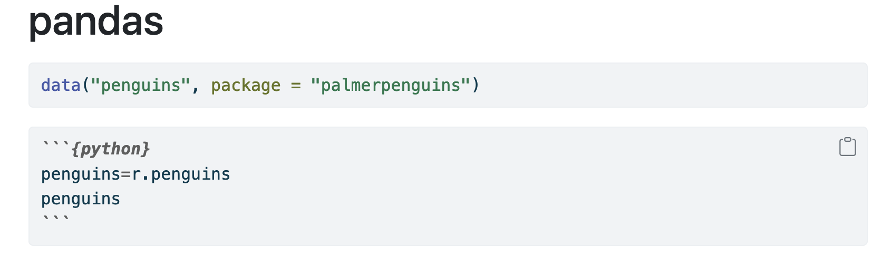
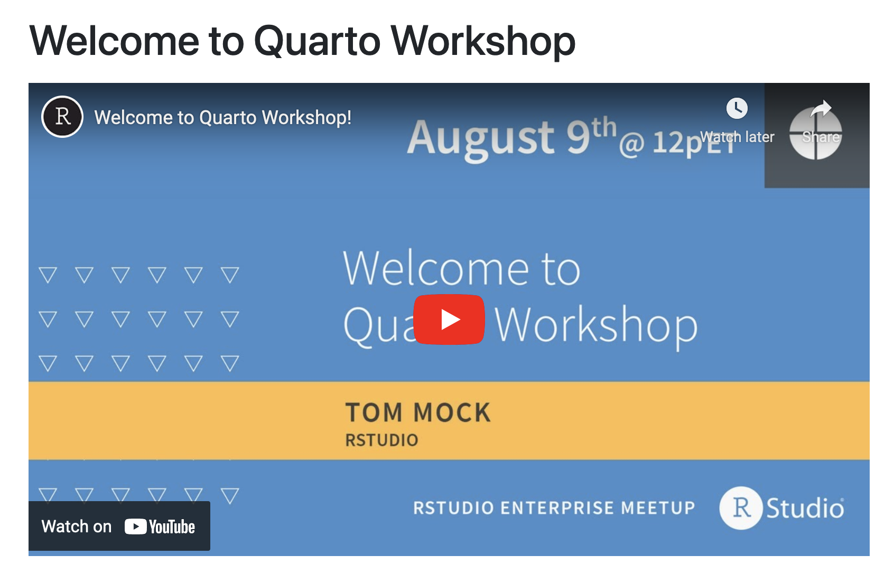
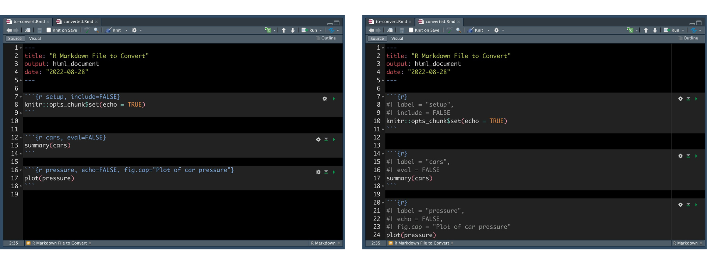

Quarto is an open-source scientific and technical publishing system built on Pandoc. With Quarto, you can render plain text and mixed formats into static HTML pages, PDFs, Word documents, websites, and more. Over the past months, we’ve been delighted to see an explosion of Quarto use, from the publication of books to the creation of widgets.
In this post, we wanted to highlight six productivity hacks for Quarto. We hope they are useful to you as you create content.
Automate insertion of Pandoc Divs and Spans with snippets
In Quarto documents, you can use Pandoc Divs and Spans to add classes, attributes, and other identifiers to regions of content. For example, we can add a border around the text using a div:
::: {.border}
This content can be styled with a border
:::
This will render as:

The text This content can be styled with a border with a border around the text.
A Span provides attributes to inline text:
[This is *some text*]{.class key="val"}
Snippets are a great way to automate inserting code. Thomas Mock provides a Gist with snippets for frequently-used Divs and Spans, making it much faster to include them in your Quarto documents:
Add them to RStudio by navigating to Tools > Global Options > Code > Edit Code Snippets:

RStudio Global Options Code toolbar with code and edit code snippets in a rectangle
Make sure to add the snippets to the “Markdown” section of the snippet editor:

Edit snippets window with Markdown option highlighted
Note that you use Shift + Tab instead of Tab to autocomplete within Quarto documents:
The same Gist includes snippets for VS Code. Add them by going to the Command Palette Cmd + Shift + P, type “configure user snippets”, create a snippet .json file, and insert the snippets:

VSCode snippet JSON file with snippets pasted inside
Within a .qmd file, call “Insert snippet” from the Command Palette and select the respective snippet.
Write verbatim code chunks with echo: fenced
When you render a code chunk within a Quarto document, you see the code contained within the chunk and the executed output by default:

Two code chunks that show code and output in a Quarto doc
However, you do not see the fenced chunk itself — that is, the ``{python}</code> portion. Seeing the chunk options can be helpful, especially when showing someone else how to format their document. You can do this using theecho: fenced` option. For example, the following code chunks:
Two code chunks that show code and output. One of the code chunk options shows its fencing. The output is below.
If you would like to include an unexecuted fenced code block, you can do this by using two curly braces around the language rather than one. For example:
```{python}penguins=r.penguinspenguins```
Will render as:

Two code chunks that show code and output. One of the code chunk options shows its fencing. The output is not printed.
Often, we add raw HTML (e.g., a video <iframe>) to insert templates or content into our Markdown documents. Shortcodes simplify the syntax and make it easier to insert what we want.
Quarto supports several shortcodes natively. For example, running the code below:
---
title: "My Blog Post"
---
My blog post is called {{< meta title >}}.
Will render as:
Document that has My Blog Post as a title and underneath says My blog post is called My Blog Post.
Authors can write and distribute their own shortcodes. For example, Mark Sellors’ Quarto Social Embeds provides shortcodes for YouTube videos, Twitter, and more.
The shortcode:
---
title: "Welcome to Quarto Workshop"
---
{{< youtube yvi5uXQMvu4 >}}
Will render as:

Document that has Welcome to Quarto as a title and underneath is an embedded YouTube video.
Shortcodes are a type of Quarto extension. Find out more in the Extensions chapter of the Quarto documentation and check out a list of available extensions in the Awesome Quarto list.
Convert chunk options with knitr::convert_chunk_header()
In the 1.40 release of knitr, a new function called convert_chunk_header() converts the old in-header chunk options to the new in-body chunk options. Note that you can use the old syntax in Quarto; however, we recommend using the new syntax to make documents more portable and consistent across execution engines.

Side-by-side images of an R Markdown document with the old chunk syntax on the left and the new syntax on the right.
This function saves time converting to the new syntax.
Re-use content across documents
Includes is a shortcode that allows you to reuse content across documents without copying and pasting. To include a file, add {{< include >}} at the location in your document where you want it included (note the underscore _ prefix for the included file):
{{< include _content.qmd >}}
You can also conditionally include content. Make content visible when rendering to a particular format using the .content-visibleclass in a Div. Or, hide content when rendering to a particular format using the .content-hidden class.
::: {.content-visible when-format="html"}
Will only appear in HTML.
:::
GitHub Actions is a platform that allows you to automate your deployment pipeline. For Quarto users, GitHub Actions can be helpful so you do not have to remember to render your document every time you push up to your repository.
Interested in learning how to make Quarto content? Watch our YouTube playlist of the Quarto Series. There are in-depth walkthroughs introducing Quarto, showing how to build a blog, and create beautiful reports and presentations.